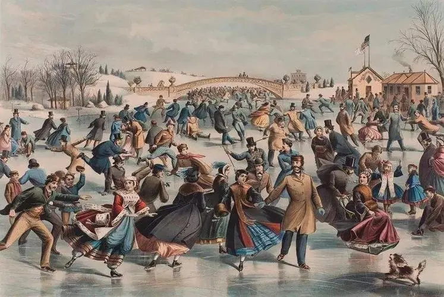
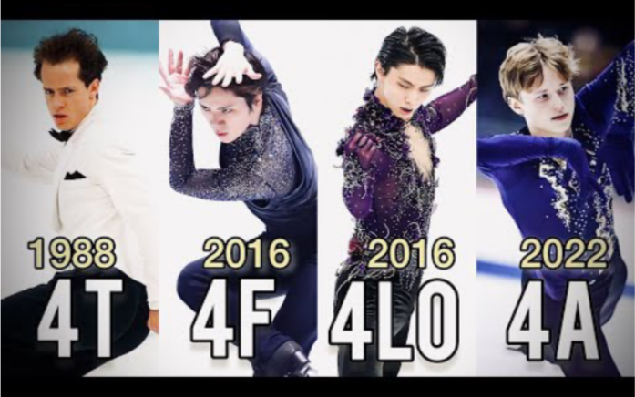

History of Figure Skating
Figure skating originated in Britain in the 18th century, and then developed rapidly in Germany, the United States, Canada and other European and American countries.
In 1772, A Treatise on Skating by Robert Jones, Lieutenant of the British Royal Artillery, was published in London, the world's first work on figure skating. Figure skating competitions were held in the so-called "English style", staid and formal, far from modern figure skating.
In 1863, the American Jackson Haines, known as the "father of modern figure skating", integrated skating with dance art and toured Europe, enriching the content and form of figure skating. In 1868, Daniel and George Mey of the United States performed the first pair skating.
In 1872, the first figure skating competition was held in Austria. 1896 The first world Men's single figure skating Championships were held in Petersburg, Russia.
In 1906, the first World Women's Single Figure Skating Championships were held in Davos, Switzerland. In 1924, it was listed as the event of the first Winter Olympic Games, including men's and women's single skating (included in 1924), pairs skating (included in 1924) and ice dancing (included in 1976).
In 1952, the first World Ice Dance Championships were held in Paris, France. Figure skating rink is 56~61 meters long, 26 ~ 30 meters wide, and the thickness of the ice is not less than 3 ~ 5 centimeters.
